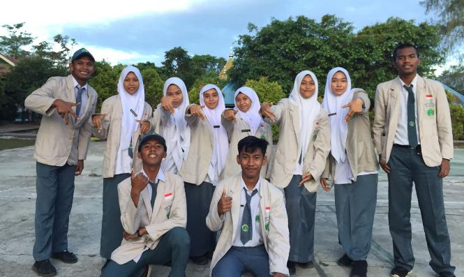
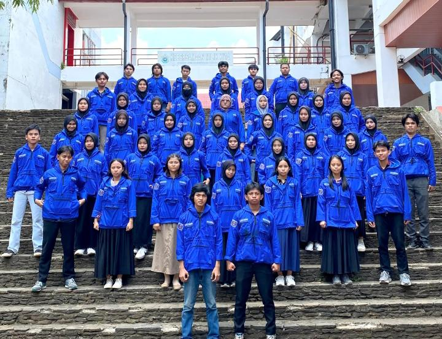

Organization Experience

Majelis Perwakilan Kelas
Menjadi sekertaris MPK di tingkat sekolah, mengatur kegiatan siswa acara sekolah.

UKM Pencak Silat Unhas
Aktif sebagai anggota dan sekertaris perguruan, melatih kepemimpinan dan kerja sama tim.

Himpunan Mahasiswa Fisika
Terlibat dalam organisasi mahasiswa, mengembangkan kegiatan akademik dan sosial.